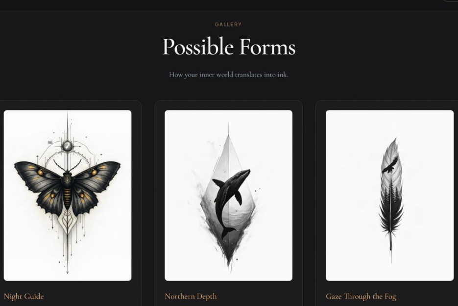

AI PRODUCT ИИ-ПРОДУКТ
Enso — AI Tattoo References Enso — ИИ-референсы для тату
A full-stack app that turns quiz answers into personalized tattoo references — with a strict Gemini JSON prompt matrix, parallel Flux.1 generation, and localStorage caching to cut API cost. Веб-приложение, которое превращает ответы квиза в персональные тату-референсы: строгая JSON-матрица промптов для Gemini, параллельная генерация Flux.1 и кэш в localStorage, чтобы снизить расходы на API.
Next.js 16
Supabase
RLS
Gemini
Flux.1
Try it out
Посмотреть сайт
(opens in a new tab)
(откроется в новой вкладке)
